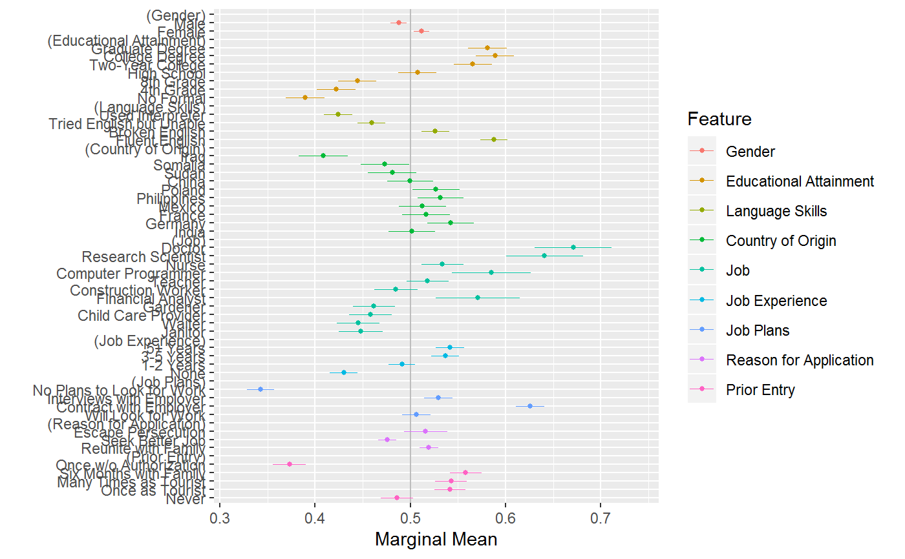
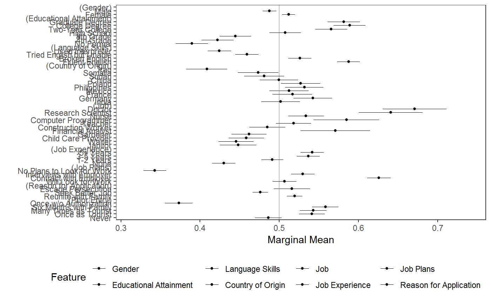

Plot AMCE estimates, MM descriptives, and frequency plots
Source:R/plot_cj_amce.R, R/plot_cj_diffs.R, R/plot_cj_freqs.R, and 2 more
plot.Rdggplot2-based plotting of conjoint AMCEs estimates and MMs
# S3 method for cj_amce plot(x, group = attr(x, "by"), feature_headers = TRUE, header_fmt = "(%s)", size = 1, xlab = "Estimated AMCE", ylab = "", legend_title = if (is.null(group)) "Feature" else group, legend_pos = "bottom", xlim = NULL, vline = 0, vline_color = "gray", theme = ggplot2::theme_bw(), ...) # S3 method for cj_diffs plot(x, group = attr(x, "by"), feature_headers = TRUE, header_fmt = "(%s)", size = 1, xlab = "Estimated Difference", ylab = "", legend_title = if (is.null(group)) "Feature" else group, legend_pos = "bottom", xlim = NULL, vline = 0, vline_color = "gray", theme = ggplot2::theme_bw(), ...) # S3 method for cj_freqs plot(x, group = attr(x, "by"), feature_headers = TRUE, header_fmt = "(%s)", xlab = "", ylab = "Frequency", legend_title = if (is.null(group)) "Feature" else group, legend_pos = "bottom", theme = ggplot2::theme_bw(), ...) # S3 method for cj_mm plot(x, group = attr(x, "by"), feature_headers = TRUE, header_fmt = "(%s)", size = 1, xlab = "Marginal Mean", ylab = "", legend_title = if (is.null(group)) "Feature" else group, legend_pos = "bottom", xlim = NULL, vline = 0, vline_color = "gray", theme = ggplot2::theme_bw(), ...)
Arguments
| x | |
|---|---|
| group | Optionally a character string specifying a grouping factor. This is useful when, for example, subgroup analyses or comparing AMCEs for different outcomes. An alternative is to use |
| feature_headers | A logical indicating whether to include headers for each feature to visually separate levels for each feature (beyond the color palette). |
| header_fmt | A character string specifying a |
| size | A numeric value specifying point size in |
| xlab | A label for the x-axis |
| ylab | A label for the y-axis |
| legend_title | A character string specifying a label for the legend. |
| legend_pos | An argument forwarded to the |
| xlim | A two-element number vector specifying limits for the x-axis. If |
| vline | Optionally, a numeric value specifying an x-intercept for a vertical line. This can be useful in distinguishing the midpoint of the estimates (e.g., a zero line for AMCEs). |
| vline_color | A character string specifying a color for the |
| theme | A ggplot2 theme object |
| … | Ignored. |
Value
A ggplot2 object
See also
Examples
require(ggplot2)#># load data data("immigration") # calculate MMs d1 <- mm(immigration, ChosenImmigrant ~ Gender + Education + LanguageSkills + CountryOfOrigin + Job + JobExperience + JobPlans + ReasonForApplication + PriorEntry, id = ~ CaseID) # plot MMs ## simple plot (p <- plot(d1, vline = 0.5))## plot with estimates shown as text labels p + ggplot2::geom_text( aes(label = sprintf("%0.2f (%0.2f)", estimate, std.error)), colour = "black", position = position_nudge(y = .5) )#> Warning: Removed 9 rows containing missing values (geom_text).## plot with facetting by feature plot(d1, feature_headers = FALSE) + ggplot2::facet_wrap(~feature, ncol = 1L, scales = "free_y", strip.position = "right")# MMs split by profile number stacked <- cj(immigration, ChosenImmigrant ~ Gender + Education + LanguageSkills + CountryOfOrigin + Job + JobExperience + JobPlans + ReasonForApplication + PriorEntry, id = ~ CaseID, estimate = "mm", by = ~ contest_no) ## plot with grouping plot(stacked, group = "contest_no", feature_headers = FALSE)## plot with shapes instead of colors for groups plot(stacked, group = "contest_no", vline = 0.5) + aes(shape = contest_no) + # map group to `shape` aesthetic scale_shape_manual(values=c(1, 2, 3, 4, 5)) + scale_discrete_manual(values=rep("black", 5)) # optionally, override colour#> Error in manual_scale(aesthetics, values, ...): argument "aesthetics" is missing, with no default# estimate AMCEs over different subsets of data reasons12 <- subset( immigration, ReasonForApplication %in% levels(ReasonForApplication)[1:2] ) d2_1 <- cj(immigration, ChosenImmigrant ~ CountryOfOrigin, id = ~ CaseID) d2_2 <- cj(reasons12, ChosenImmigrant ~ CountryOfOrigin, id = ~ CaseID, feature_labels = list(CountryOfOrigin = "Country Of Origin")) d2_1$reasons <- "1,2,3" d2_2$reasons <- "1,2" plot(rbind(d2_1, d2_2), group = "reasons")